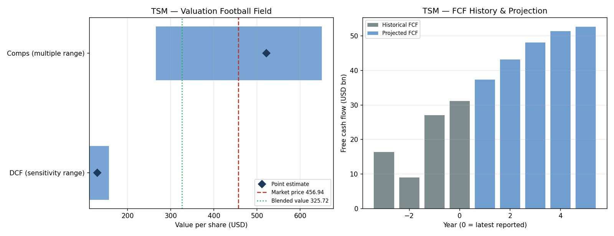
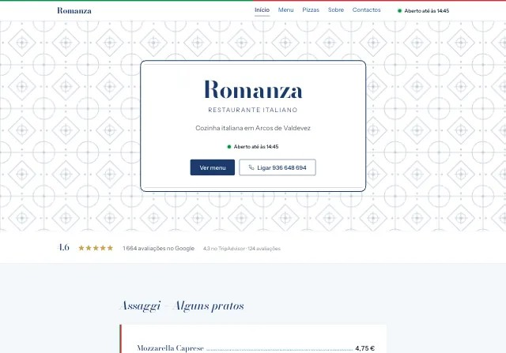
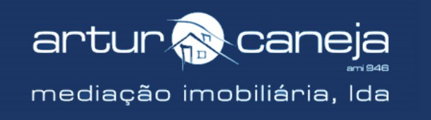

IT Management for Business student at Loughborough University. I build finance tools in Python, study how markets price information, and make websites for local businesses in Portugal.
Looking for a 2027–28 placement in finance or technology
Finance and data work in Python. Code is on GitHub.
How fast does news get into stock prices?
Complete · 2026
An information diffusion study of 797 S&P 500 stocks from 1997 to 2026. It measures how quickly prices absorb market-wide news (price delay, Hou & Moskowitz 2005) and firm-specific news (event study with post-announcement drift), using real market data only, and publishes the results as an interactive dashboard.
95%of the 60-day move made within 3 days of good news (2016–26), up from 82% in 1997–2005
A command-line tool that values a listed company two ways, a discounted cash flow (FCFF, WACC from CAPM, Gordon Growth terminal value) and comparable companies (P/E, EV/EBITDA, EV/Revenue, P/B), then gives an over, under or fairly valued verdict with a football-field chart. Data comes live from Yahoo Finance.
The bug that taught me the mostValuing TSMC first returned "655% undervalued". The tool was reading statements reported in Taiwan dollars as US dollars, inflating cash flows about 30 times. I fixed it by converting statements to the trading currency and skipping P/B for foreign ADRs. It also showed me why DCF and comparables disagree for a company in a heavy investment phase.

TSMC: comparables and DCF ranges against the market price, and the free cash flow projection.
I'm rebuilding my own investing history from scratch, around 2,950 transactions across 294 tickers exported from Trading 212, to measure return, risk and diversification against the S&P 500 and FTSE 100. Multi-currency holdings (EUR, USD, GBX), stock splits and frequent deposits make the accounting the hard part.
Clean and classify every transaction Now
Rebuild holdings day by day Next
Daily portfolio value in EUR from market prices
Time-weighted return, volatility, Sharpe ratio, max drawdown, beta
Charts and findings, then rerun on my investment competition portfolios
Websites for small businesses in Arcos de Valdevez, Portugal.
I started building websites for local businesses that have little or no presence online. I take each one from brief to design system to build: researching the business, writing the copy in Portuguese, and designing for the customers they actually have.

Romanza
In progress
Italian restaurant with 4.6★ from over 1,600 Google reviews and no website. The new site puts the full menu online and turns phone-only delivery orders into a simple online flow. The design pairs Italian trattoria type with the Portuguese tiles from its logo.

Artur Caneja Imobiliária
In design
Estate agency with 40 years in the Alto Minho and one of the oldest licences in Portugal. The site presents 100+ properties, from granite houses to rural estates, to local sellers and to buyers in Porto, Lisbon and abroad.
Experience
2026 – now
Freelance web developer
Designing and building websites for local businesses in Portugal: client research, copy, design systems, build and hosting.
2022 – now
Fanny Boutique · family shop, Arcos de Valdevez
Work every Christmas, Easter and summer holiday in the family shop.
Handle €1,000+ in cash a day and reconcile the till.
Analyse sales patterns across 50+ product categories and run the shop's Facebook page and seasonal promotions.
Oct – Nov 2025
UMushroom Investment Challenge
Managed a virtual £100k equity portfolio in a UK university competition. A sharp US sell-off hit it hard. It was a real lesson in diversification and risk management.
Mar 2024 – May 2025
Co-founder and Python instructor · The Coding Society
Started the school's coding club at Oporto British School and taught other students Python from the basics.
Nov 2023 – May 2025
Technology Prefect · Oporto British School
Tech support for 100+ students and teachers. Gave an internet-safety talk to 200+ pupils.
Education
2025 – 2029
BSc IT Management for Business · Loughborough University
Placement route, accredited by TechSkills (Tech Industry Gold). First-year average 66.3% (2:1). Strongest in finance.
Principles of Finance 82
Quantitative Business Skills 76
Introduction to Accounting 74
Management of HR 74
2023 – 2025
IB Diploma (Bilingual) · Oporto British School, Porto
Higher Level: Maths Analysis & Approaches, Digital Society, Portuguese A. Standard Level: Computer Science, English, Geography.
Beyond the classroom
Creativity, Activity and Service from my IB years, 2023–2025.
ServiceActivity
€428 for the Morocco earthquake appeal
Helped run a school bake sale in September 2023, sent through Porto Solidário. Afterwards I pushed for a plan for unsold food so nothing went to waste, and asked why we weren't also helping after the Libya floods.
Service
Banco Alimentar food collection
Handed out bags and collected food donations for Portugal's food bank, which supplies more than 2,300 charities. Talking to strangers was hard at first. I came away much more confident doing it.
ActivityService
Running school events
My year group organised the school Halloween party. A friend and I ran "Sponge the Teacher", one of the busiest stalls of the night. I also decorated the school, helped with the clean-up, and ran the art activity and bingo at the Christmas tree lighting ceremony.
ServiceCreativity
Teaching and tutoring
Co-founded the Coding Society, tutored Portuguese and IGCSE Maths, and read to primary school students.
Creativity
Teaching myself to code
Learned Python, Java, HTML, CSS and JavaScript on my own time, the start of everything in the projects above.
Activity
Model UN, travel and sport
Typist at the OBSMUN 2024 conference and its mock session. Helped at a donkey farm and visited the traditional pigeon houses on a school trip to Miranda do Douro. Table tennis club and the gym.
Skills
Code and data
Python (pandas, matplotlib, yfinance)
SQL
Java
HTML, CSS, JavaScript
Git and GitHub
LaTeX
Finance
DCF and comparables valuation
Portfolio return and risk metrics
Event studies
Excel
Awards and clubs
Student of the Year, 2024
SuperTmatik mental calculation, 34th of 7,630 (2020)
Loughborough Table Tennis Development Squad
Finance & Accounting, Debate and Oriental Societies
Let's talk.
Placements, internships, or a website for your business.